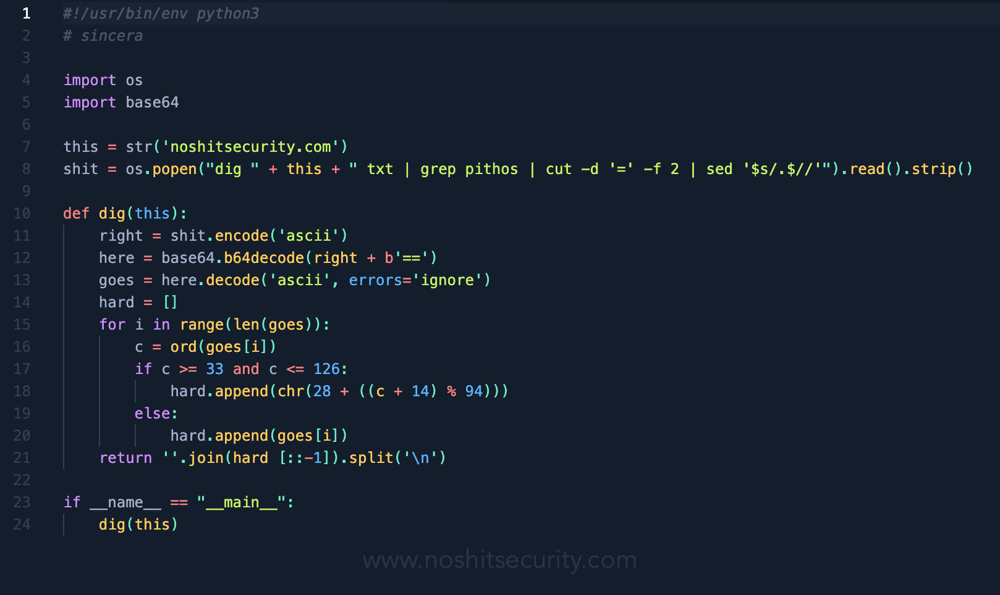
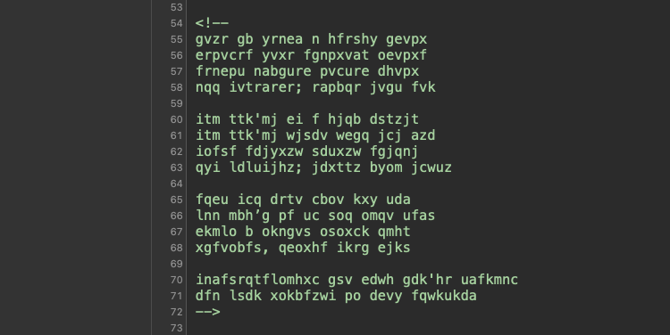
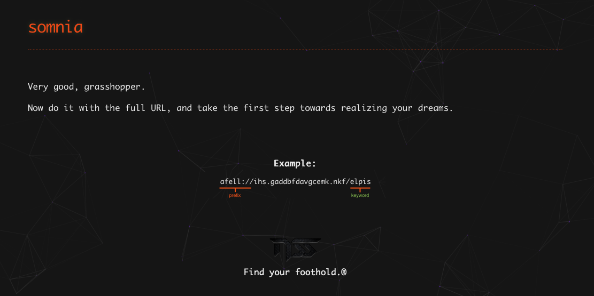
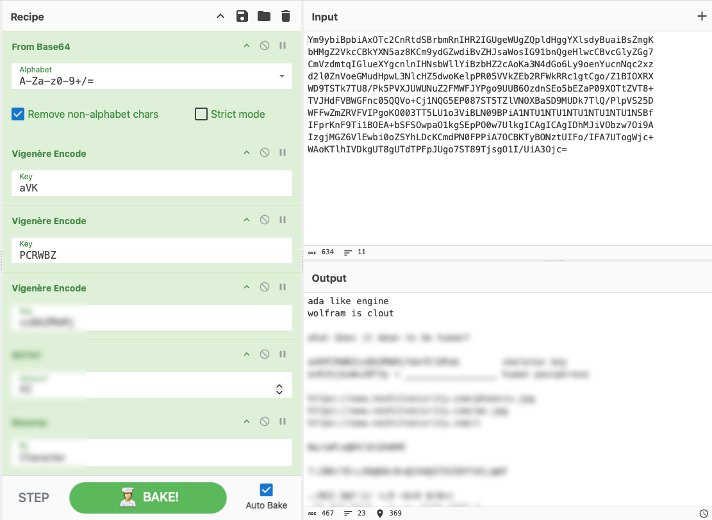
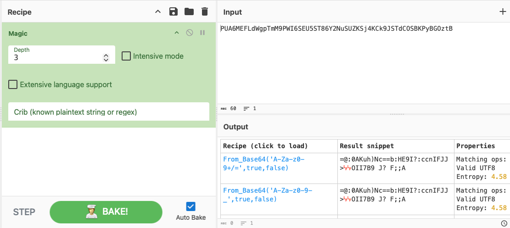
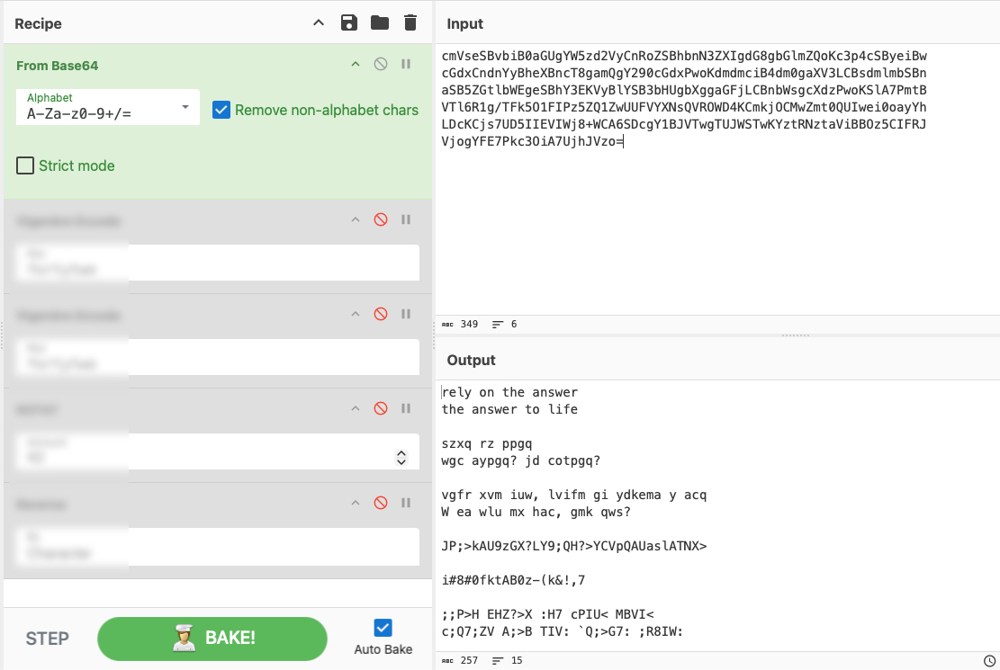

This page is still under construction.
In the meantime, you can still peruse what is currently available while additional content is populated here.
In the meantime, you can still peruse what is currently available while additional content is populated here.
Every cryptogram, puzzle, or application of technique in the challenges available in the NSS Jurassic Jungle® training content was designed to capture the spirit and essence of what cryptography empowers the mind to do. From the rudimentary ease of breaking simple ciphers, to the layered combination of advanced algorithms and concepts to produce challenges that unlock themselves, each design was carefully crafted not only to teach a valuable, repeatable lesson, but to honor the historical achievements of those who came before us by applying old concepts in exciting new ways that fuse technology with art to birth wildly original content that becomes more than the sum of its parts.
When viewing the content here, you are urged to visit the Dinosaur Helpdesk System on the NSS page and attempt to use the Glossary to help you not only break the codes, but to discover the underlying patterns beneath them. Much like the entry challenge available on the first page, many of our puzzles make use of several different methods in combination to teach lessons that go beyond simple vocabulary. Every single cryptogram can be approached in different ways. The glossary terms and tools available on this page will help you learn by doing.

This image contains a python script that only executes via the interpreter, in which it queries the NoShitSecurity website for a DNS TXT record and then deciphers it to deliver a special link.This image and accompanying python script were widely shared on the NSS Pandora site and the offical company LinkedIn page as a way to invite new students to find the server where we host our lessons and coursework. Most of the candidates that got ahold of this script simply said "it does not work" and left it at that. What we did not tell them was that this script will not execute in the terminal— it only works in the interpreter. We offered a special reward to anyone who could tell us both how the script works and why that is.

This cryptogram became a fan favorite, and they used it to vet new candidates during technical interviews for their companies. I called this technique the "padlock" and it is still my favorite demonstration, and one of our best tricks. This cryptogram was also used to demonstrate how solving the final "K4" passage of Kryptos would require much more than simply knowing what the plaintext was in a given position.
For example:
congratulations.................
.......................thirteen
One of Jim Sanborn's hints is delivered exactly like this: you get a few characters surrounded by empty spaces, with the idea being that when the final passage of K4 is deciphered, the words "BERLINCLOCK" and "EASTNORTHEAST" will be visible in the solution. However, due to the masking technique that is applied either before, after, or during other calculations, without knowing the method, even if you had the correct key you may never land on the correct answer. When the final part of the NSS cryptogram was given to Kryptos enthusiasts, not a single one of them were able to decipher it, because solving the NSS entry cryptogram requires the entire thing to be left intact while a series of operations are applied to it. By applying the masking technique, you unlock the first passage, which unlocks the second, then the third, until the cryptogram solves itself and grants visibility to the final passage. And like Sanborn's design, the final passage leads to another puzzle.

This image contains an example of "The Gordian Knot" first introduced in Tier II, and is used as a metaphor for inventing an unexpected method to solve a seemingly intractable problem.The cutting of the Gordian Knot is an Ancient Greek legend associated with Alexander the Great in Gordium in Phrygia, regarding a complex knot that tied an oxcart. Reputedly, whoever could untie it would be destined to rule all of Asia. In 333 BC, Alexander was challenged to untie the knot. In one interpretation of the legend, instead of untangling it laboriously as everyone expected, he dramatically cut through it with his sword. In another interpretation, Alexander the Great wanted to untie the knot but struggled to do so before reasoning that it would make no difference how the knot was loosed. Although sources from antiquity disagree with this interpretation, we used both versions.
For example:
afell://ihs.gaddbfdavgcemk.nkf/elpis
The first thing we notice is the underlined portions on either end of the cryptogram being the prefix on the left side and the keyword on the right side. By using simple critical thinking skills, we can infer that the afell:// prefix must surely decipher to https://, meaning there is more than one way to solve this problem: you can either attempt to brute force the solution by working your way from left to right and using differential cryptanalysis and adaptive chosen plaintext attacks to render the https:// prefix, or you can cut directly through the center by discovering the key. In these challenges, the key to solving the puzzle is hidden in plain sight and quite literally staring you right in the face.
To align with Alexander's assumption that it would make no difference how the knot was loosed, we provided several decrypted versions of these "gordian knots" during all of our Tier II challenges, allowing students to leverage attacks like Ciphertext Only, Known Plaintext, Related Key, Chosen Ciphertext, and adaptive permutations to discover strings that leveraged mimic functions or key wrapping operations to obfuscate or even oppose the traditional method of using the keyword to solve the puzzle. As time went on, the Gordian Knot was used in all remaining challenges, and by Tier V, the prefix was dropped, the entire string was obfuscated, and the keyword became the only visible part.
For example:
xxxxxxxxxxxxxx.xxx/history

Following in the footsteps of the Dinosaur Key that came before it, the Skeleton Key is used to power everything from symmetric encryption, such as to extract files hidden with steganography; as a base key for different formulas used as one-time pad; as the master password for secret keys used in assymetric cryptosystems such as PGP, and even as a string to produce an md5 hash, lending additional or alternate use for all the previous categories and more. The Skeleton Key was used to introduce students to the concepts of cryptograhpic rounding, key wrapping, multi-step operations and one-time pad, and then later used to teach cryptanalysis concepts such as related key or slide attacks.
Every cryptogram, puzzle, or application of technique in the challenges available in the NSS Jurassic Jungle® training content was designed to capture the spirit and essence of what cryptography empowers the mind to do. From the rudimentary ease of breaking simple ciphers, to the layered combination of advanced algorithms and concepts to produce challenges that unlock themselves, each design was carefully crafted not only to teach a valuable, repeatable lesson, but to honor the historical achievements of those who came before us by applying old concepts in exciting new ways that fuse technology with art to birth wildly original content that becomes more than the sum of its parts.
When viewing the content here, you are urged to visit the Dinosaur Helpdesk System on the NSS page and attempt to use the Glossary to help you not only break the codes, but to discover the underlying patterns beneath them. Much like the entry challenge available on the first page, many of our puzzles make use of several different methods in combination to teach lessons that go beyond simple vocabulary. Every single cryptogram can be approached in different ways. The glossary terms and tools available on this page will help you learn by doing.

This image contains a simple cryptogram that can be gleaned from the footer of the NSS website or from the DNS TXT records, and when deciphered it delivers a special link.When the Sincera's Pandora website was launched, this cryptogram was shared across social media and embedded into the footer of the HTML and in the DNS records of the site as a way to invite students to join the Discord server where additional lessons, coursework, and challenges awaited. Only 3 steps are required to find a solution, and due to the simplicity of the design, many students were able to solve it within minutes or even seconds. In the example above, the "magic" operation in CyberChef instantly identifies Base64 as a wrapping mechanism, and a keen eye can see that the unwrapped snippet is most likely ROT47 or a variant of it. In 2022, a script was provided to automatically decipher the string and also give students an opportunity to earn additional ranks if they could explain how the script worked.

This image contains a layered cryptogram that can be gleaned from the root of the NSS website, and once the masking layer is unwrapped, it deciphers itself to reveal the Skeleton Key.When the Sincera's Pandora website was launched, this cryptogram was placed in the root directory of the website and instructions were given to "curl the shovel" which meant to issue the Unix shell command curl to retrieve it. Since the NSS website lives on a GitHub repository, the -sSL flags must be tacked onto the end of the command to follow redirects and successfully retrieve the shovel, and once the Base64 masking layer is unwrapped, this cryptogram uses the same techniques found in the Padlock to deliver hints and clues in each successive layer that effectively make the cryptogram solve itself, rendering a completed Skeleton Key that is used in other applications and challenges.
Cryptography, or cryptology, is the practice and study of hiding information. It is the science used to try to keep information secret and safe. When a message is sent using cryptography, it is changed (or encrypted) before it is sent. The method of changing text is called a "code" or, more precisely, a cipher. The changed text is called ciphertext. Different types of cryptography can be easier or harder to use and can hide the secret message better or worse. Ciphers use a key to encrypt a message. The cryptograhpic method can be public, but the key it uses must remain secret. In the case of transposition, the cryptographic method itself becomes the key.
Cryptanalysis is the term used for the study of methods for obtaining the meaning of encrypted information without access to the key normally required to do so; i.e., it is the study of how to "crack" encryption algorithms or their implementations. Studying the ciphertext to discover the plain text, the key, or the algorithm used to produce the ciphertext is called cryptanalysis, or sometimes code breaking. Cryptanalysis (from the Greek kryptós, "hidden", and analýein, "to loosen" or "to untie") is the study of methods for obtaining the meaning of encrypted information, without access to the secret information which is normally required to do so. Typically, this involves finding a secret key. In non-technical language, this is the practice of codebreaking or cracking the code, although "break" can also mean just a part of a complete solution.
There are two main types of cryptosystems: symmetric and asymmetric. In symmetric systems, the only ones known until the 1970s, the same secret key encrypts and decrypts a message. Data manipulation in symmetric systems is significantly faster than in asymmetric systems. In an asymmetric system, one key encrypts or verifies what the other key encrypts or signs. Asymmetric systems use a public key to encrypt or verify a message and a related private key to decrypt or sign it. The advantage of asymmetric systems is that the public key can be freely published, allowing parties to establish secure communication without having a shared secret key. In practice, asymmetric systems are used to first exchange a secret key, and then secure communication proceeds via a more efficient symmetric system using that key.
The first use of the term "cryptograph" (as opposed to "cryptogram") dates back to the 19th century, originating from "The Gold-Bug" story written by Edgar Allan Poe. The etymology of the term goes back to the Greek language; it is formed by two constituents: crypton, or hidden, and grapho, which means to write. However, there is an older book titled Steganographia, written in c. 1499 by the German Benedictine abbot and polymath Johannes Trithemius. This book is in three volumes, and appears to be about magic — specifically, about using spirit to communicate over long distances. However, since the publication of a decryption key to the first two volumes in 1606, they were discovered to be actually concerned with cryptography and steganography. Until 1996, the third volume was widely believed to be solely about magic, but the "magical" formulas have now been shown to be covertexts for yet more material on cryptography.